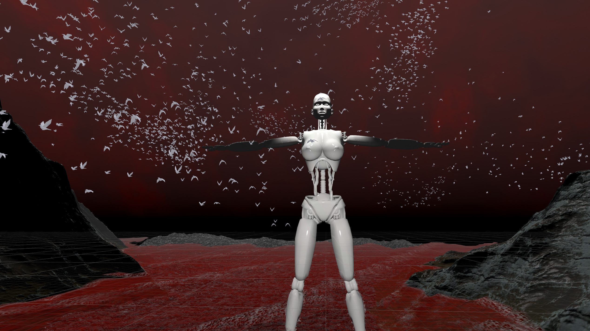
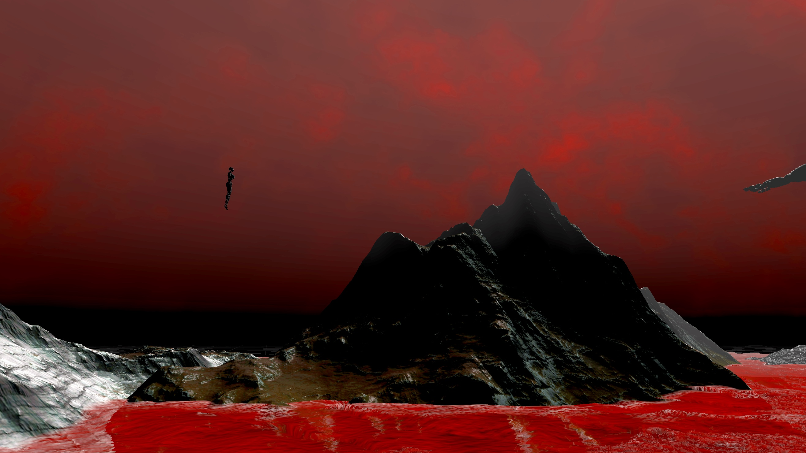

This project is telling a cinematic story about memories in an abandoned place like a memory palace. This
virtual environment will contain many abandoned objects in an underwater environment by imagining the
space in a futuristic setting and convey the ideas by its narrative way, characters, style, and audio.


Concept
An abandoned place with futuristic concept and aesthetic style
Memory and consciousness
Cinematic narrative
Cyborg as main character
Project Mandate & Interactions
Consciousness and memory as solid existence
Amplify the importance of memories for human beings, consider how memory is one of the most essential
elements for a human being
The participant is acted as a cyborg which trigger the consideration between artificial intelligence and
humans
In a futuristic setting, discover the relationship between human and artificial intelligence in which
memories are a very crucial part of one's spirit (consider cyberpunk films settings like Blade Runner,
Ghost In The Shell, West World)
Interactions are built according to the objects which are picked when a participant encounters an object
attached with memory, the scene will alter to a pure white scene (indicate the scene is preserved in
memory)
The giant robot is also the reflection of the character, like the god's eye observing the whole world
like things that we cannot control
Use particles and audio sources as guide
The purpose of this project is to convey the ideas related to consciousness and memories through a
cinematic narrative. Viewers within the virtual space granted the ability to walking around, exploring,
and find those objects attached with memories in a visible way that would otherwise be unavailable in
reality when just recalling traces of unclear memories. Additionally, the spatial aspects and the
interactions contribute to the narrative in a more influential way to trigger the emotional impact on
the participants.